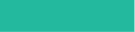
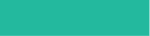
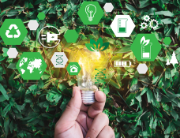
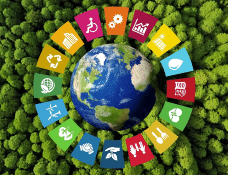
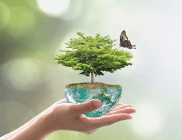
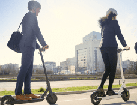
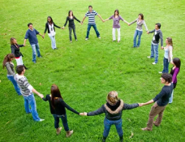

HOME
SOBRE NÓS
NOTÍCIAS
O QUE

HOME
SOBRE NÓS
NOTÍCIAS
O QUE
PRETENDEMOS? Educação Ambiental:
Palestras, workshops e inclusão de temas sustentáveis nos currículos.
Conscientização:
Campanhas sobre reciclagem, economia de energia
e materiais informativos.  Infraestrutura Sustentável:
Energia renovável, gestão eficiente de
resíduos e uso de materiais ecológicos.  Voluntariado Ambiental:
Programas práticos para estudantes, como limpezas
e plantio de árvores.  Transporte Sustentável:
Incentivo ao uso de bicicletas, transporte
público e caronas solidárias.  Monitoramento e Avaliação:
Acompanhamento constante do progresso e
feedback para melhorias. OBJETIVO Criar uma comunidade acadêmica consciente e engajada em práticas sustentáveis na Universidade da Madeira. 